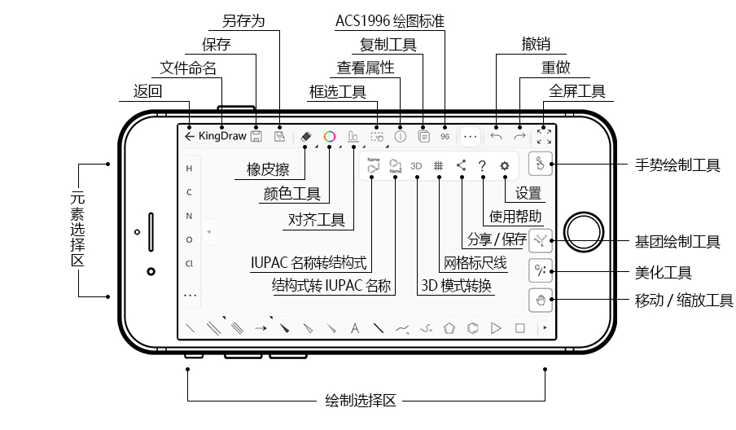
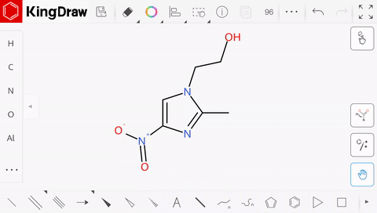

KingDraw 避坑指南：画了半年结构式才发现的几个暗坑
KingDraw 看着简单，真正上手画反应机理时才会遇到几个容易让人抓狂的小问题。红框消不掉、AI识别翻车、手势画错键角——这篇把症状、原因和解法一次说清。
开头：这软件真的有坑
我第一次用 KingDraw 是在实验室，旁边师弟掏出手机几下就画好了一个六元环加酯基的结构，我当时还在 ChemDraw 里找模板。它的官网上明确把卖点摆出来：手势画环、AI 拍图识别、全平台免费，对于经常和结构式打交道的人来说简直是救命稻草。
但踩了几次坑之后发现，它的"简单"只停留在表面。有几个暗坑第一次碰到时真的会让人以为要重装软件，今天把这些坑整理一下，都是血的教训。
坑一：红框消不掉，像是粘在结构上一样
症状
画好一个结构，导出图片的时候发现结构外面套着一个红色虚线框。回画板上看还在那儿，怎么点空白处都消不掉，保存了重开文件它照样粘着。

原因
这个红框本质上是框选状态没取消。KingDraw 的框选工具设计有点反直觉：你用它选中过任何元素，哪怕只是框了一下什么也没改，工具也不会自动退出。新手很容易画完就直接切去保存或导出，结果带着个红框。
另外两种少见情况：AI 图像识别或智能美化完成后会加临时标记框，理论上应该自动消失，但偶尔会卡成"常驻状态"；还有一种是绘图引擎的小 bug，某个元素被错误标记，红框死活去不掉。
解法
最直接的一招：点击画板空白处，红框立刻消失。如果不行，按 Esc 键也能取消选择。移动端更简单，双击空白处就行。
如果是 AI 识别残留的临时标记，切换工具再切回来就没了。真遇到那个罕见的 bug，Ctrl+A 全选然后剪切粘贴，红框就跟着剪贴板重置一起消失了。
最后说句良心话：红框不影响实际导出。KingDraw 导出图片时只捕捉真正的结构式元素，红框不会被带进去。所以哪怕你懒得消，导出来的图片也是干净的——这是我后来才敢确认的事，之前白折腾了好几次。
坑二：AI 图像识别出来的结构到处都是错的
症状
拍了文献上一个分子结构，AI 秒识别出来一看：双键位置错了、N 和 O 认反了、立体楔形键全丢了，最离谱的是一个五元环被识别成了六元环。兴冲冲拍完图想省半个小时的重画时间，结果校对加修改花了比重画还久。

原因
识别效果高度依赖图片质量。模糊的扫描件、光线不均的手机照片、键线过于密集的复杂多环体系，这些情况 AI 的识别率会断崖式下降。另外两个经常被忽略的点：缩写基团（Me/Ph/t-Bu 这类）AI 不会展开，需要自己补画完整；立体化学（R/S 构型、顺反异构）的楔形键和波浪键识别率几乎为零，只能人工确认。
还有一个坑容易误会：AI 图像识别功能只有移动端有。如果你在 PC 版本上找了半天找不到这个功能，不是你没找到，是 PC 版根本没做这个。别去翻 PC 版的更多菜单了，白费劲。
解法
拍照时尽量拍清晰、对比度高、光线均匀的图片，一个或少量结构式最好，别一张照片拍满三页文献。识别出来之后重点校对四个地方：双键位置、杂原子标记、立体化学标记、环的大小。这四个点挨个儿查一遍，通常能抓到 90% 的错误。
缩写基团建议先在纸上或原图标出来，识别完直接对照着补。立体化学就别指望 AI 了，该画楔形键就手动画，这一步省不了时间。
坑三：工具栏藏得太深，找不到高级功能
症状
想画一个三键或者累积双键，底部工具栏里只有单键和双键，翻遍了也没找到三键的入口。或者想调整键角，拖动端点感觉不对，但又找不到精确调整的地方。刚上手那几天总觉得 KingDraw 的功能比 ChemDraw 少一大截。
原因
KingDraw 的工具栏设计是"高频直接点、低频长按调"。底部工具栏上带三角标识的按键，长按才会展开更多选项。比如长按双键工具，才会出现三键、累积双键、芳香键这些高级化学键；长按箭头工具，才会显示虚线箭头、可逆箭头、弯曲箭头等所有样式。
这个设计逻辑在移动端还好理解（小屏幕放不开那么多按钮），但 PC 端也沿用了这个设计，新手第一次用真的很难发现。我一开始以为是版本问题，还去官方下载翻了半天想换个版本试试。
解法
记住一个口诀：带三角的，长按。底部工具栏上任何一个边角有小三角标识的按钮，长按都会弹出扩展面板。化学键、箭头、流程图工具、手势绘制入口——这几个是最常用的长按展开点。
键角调整的问题其实是没发现 KingDraw 自带了自动键角对齐功能——后来去KingDraw文档翻了一下才搞清楚：拖端点的时候稍微停一下，键角会自动吸附到标准角度（60°、120°、180°这些）。如果需要精确的非标准角度，可以关掉自动对齐，直接拖端点就行。

坑四：手势画错了想撤销，结果全画没了
症状
刚用手势画环很兴奋，一个手势画了个七元环（本来想画六元的），点撤销——结果整个画板都清空了，刚才画的三个反应步骤全没了。
原因
手势绘制模式下，KingDraw 把每一次连续的手势操作当成一个原子操作。也就是说，你画一个六元环加一个取代基，中间没抬手的话，撤销一次会把这整串都撤掉。而在 PC 端的普通模式下，每画一个元素算一步，撤销精度是单个元素级别。
移动端的撤销历史默认保留 30 步，30 步之前的就没了。如果你连续画了好几个结构没保存，又连续撤销多步，很容易把之前的成果撤没。
解法
画手势之前先保存，或者画完一个结构片段就退出手势模式。手势模式和普通绘图模式之间切换很方便——底部工具栏点一下手势图标就切换了。另外养成习惯：每画完一个完整结构就手动保存一次，云端同步虽然能救回来大部分，但本地保存永远是最保险的。
移动端画复杂结构时也可以随时切换成普通点选模式，虽然没手势快但精度更高，撤销粒度也更细。两种模式配合着用才是正道。
防坑清单：记住这五条省半天时间
- 红框别怕——点击空白处或按
Esc就能消，真消不掉也不影响导出 - AI 识别后必查四件事：双键位置、杂原子、立体化学、环大小
- 带三角的按钮要长按才能出高级功能，不是版本缺功能
- 手势模式撤销粒度粗，画完一个片段就切换回普通模式或保存
- PC 版没有 AI 图像识别，别在电脑上死找这个功能
知道这些坑之后，这软件其实相当省心。永久免费、手势画环比点模板快、云端同步手机 PC 无缝接力——在化学绘图这个被高价商业软件垄断的领域，KingDraw 能做到这个程度真的不容易。我整理的那份配套文件分别推到了GitHub、Gitee、GitCode三个仓库，国内读者优先 Gitee 或 GitCode 速度更快。